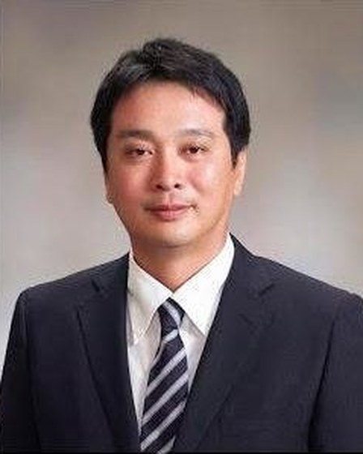

Team
Amil Khanzada
Founder of ZenIT
Computer Science B.A., UC Berkeley
Evolution Ambassador of Eiheiji Town (profile)
One Young World Ambassador (profile)
Amil holds 7 years of software development experience in the Silicon Valley and 2 years of software consulting experience in Tokyo and Hong Kong. He has been practicing Martial Arts and Yoga since 2005, and his other hobbies include Zen, meditation, cultural immersion, nutrition… everything related to self-improvement! Amil is fluent in Japanese and travels between Eiheiji and his hometown in Silicon Valley often.

Hisamitsu Kawai
Mayor of Eiheiji Town (profile)
Zen Culture Evangelist
Specializes in connecting leaders of various backgrounds across Japan.